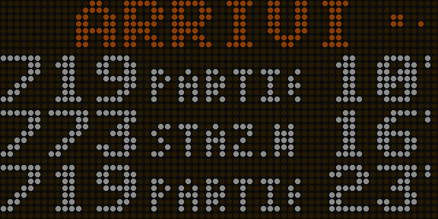
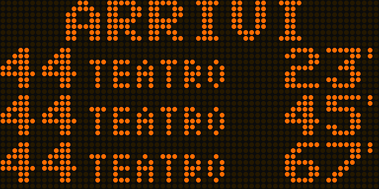
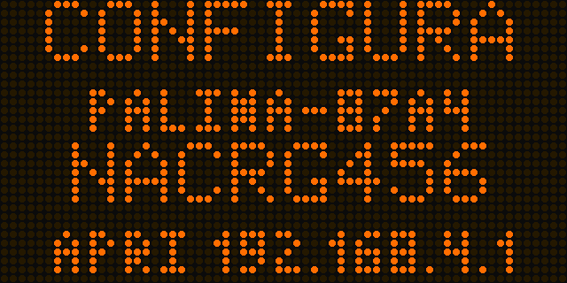
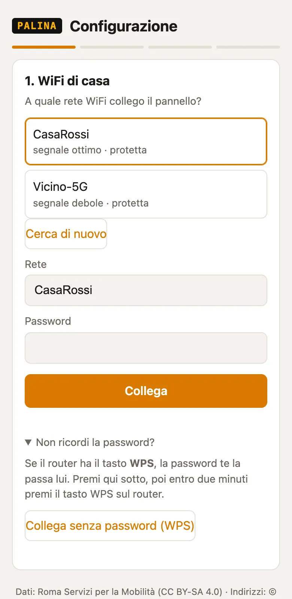
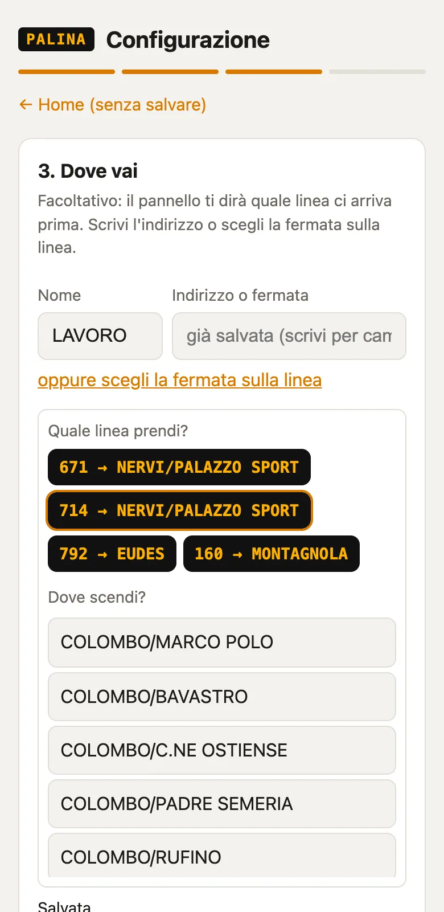
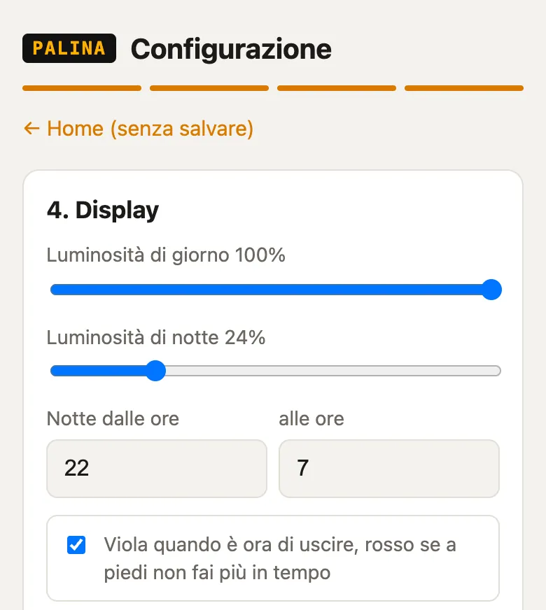
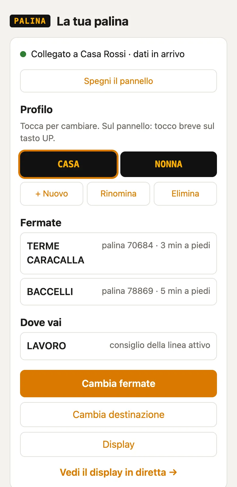
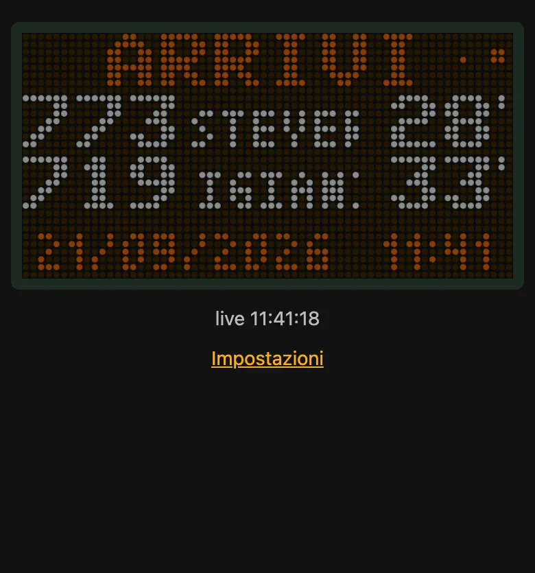
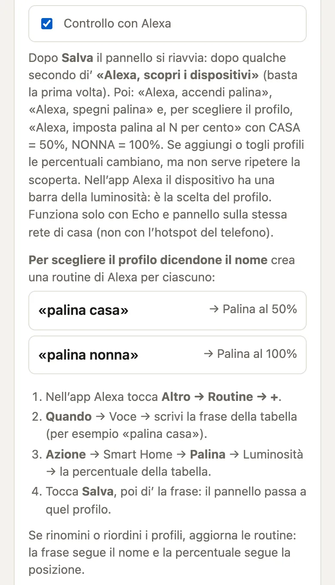

Un pannello a LED con gli arrivi degli autobus alle fermate che scegli, da tenere in casa vicino alla porta: guardi e sai subito se è il momento di uscire.
La palina del bus con l’intelligenza artificiale. Ti avvisa anche se oggi il bus salta la tua fermata per lavori, cortei o scioperi.
La PalAIna è un pannello a LED che mostra gli arrivi degli autobus alle fermate che scegli, come le paline elettroniche per strada. Dice:
Fra quanti minuti passa il bus alla tua fermata. Ogni bus di Roma dice dove si trova, quindi i ritardi sono già contati.
Quante fermate mancano prima che il bus arrivi da te.
L’orario stampato, quando il bus non è ancora partito dal capolinea.
Il bus giusto per dove vai: gli dici «lavoro» o «scuola» e ti dice quale linea ti porta prima.
Bus + treno (in prova): se cambi in stazione, ti dice se fai in tempo a prendere il treno.
Lavori, cortei, deviazioni: un’intelligenza artificiale legge gli avvisi del Comune e ti avvisa solo se riguardano la tua fermata.
Scioperi di oggi e dei prossimi giorni.
Maltempo: pioggia forte, temporali o neve in arrivo.
Viola quando è ora di uscire, rosso se non fai più in tempo: sa quanti minuti ti servono a piedi fino alla fermata.
Profili: più gruppi di fermate (casa, nonna, lavoro), e cambi con un tocco.
Comandi a voce con Alexa (facoltativo): accendi e spegni la palina e cambi profilo parlando. Come si fa.
Come funziona, in breve
Il pannello non fa i conti da solo. Un nostro computer su internet legge ogni pochi secondi i dati pubblici di Roma (dove sono i bus, gli orari, gli avvisi), fa i calcoli per la tua fermata e manda al pannello solo le righe da mostrare. Per questo consuma pochissimo internet: basta anche quello del telefono.
1Dati apertiRoma pubblica posizione dei bus, orari e avvisi; Trenitalia i treni; Open-Meteo il meteo.
2ServerCalcola i minuti, sceglie la linea migliore e fa leggere gli avvisi all’intelligenza artificiale.
3PalAInaRiceve le righe da mostrare e le disegna sul pannello.
Come si legge il display

In alto: ARRIVI
Fisso. Ogni tanto lascia scorrere un messaggio. I puntini a destra indicano che ci sono più pagine di arrivi.
Riga: numero a sinistra
La linea (44, 773, 719…).
Riga: centro
A turno ogni 6 secondi: le fermate mancanti (7 Ferm.) e il capolinea, che scorre per intero e dice la direzione.
Riga: a destra
I minuti all’arrivo (7'). ORA lampeggiante: sta arrivando adesso.
In basso
Data e ora, quando c’è spazio libero.
I colori
7'
Bianco: dato certo. Il bus è in strada e il tempo arriva dal suo GPS.
7'
Arancione: orario stampato. Il bus non è ancora partito. Queste righe restano sempre arancioni, mai viola o rosse: non sappiamo se il bus passerà davvero, quindi il pannello non ti fa correre.
7'
Viola: esci adesso. Camminando ce la fai ancora, ma fra tre minuti non più.
4'
Rosso: a piedi non fai più in tempo a prenderlo.
Esempio: ti servono 6 minuti a piedi. Un bus a 8, 7 o 6 minuti è viola: esci adesso. Da 5 minuti in giù diventa rosso: camminando non lo prendi più. Vale solo per i bus già per strada (righe bianche).

Esempio con orari stampati (arancione): a quell’ora nessun 44 era ancora partito.
I messaggi che scorrono
! 44 NON FERMA QUI
Un avviso dice che la 44 oggi salta la tua fermata: la linea sparisce anche dagli arrivi.
AI: 871 NON FERMA QUI
L’informazione viene da una notizia di infomobilità letta dall’intelligenza artificiale.
INFO: PIOGGIA FORTE DALLE 17 - POSSIBILI RITARDI
Una volta al minuto, in basso: la previsione del meteo delle prossime 12 ore. Se non c’è niente da segnalare non compare mai.
Configurazione in 4 passi, dal telefono
Serve solo un telefono, per la prima volta. Non c’è nessuna app da scaricare.
Prima: passo 0
Accendi la palina
Al primo avvio la palina crea una sua rete WiFi e mostra sul display CONFIGURA, il nome della rete (per esempio PALINA-87A4), la password di 8 caratteri (per esempio NACRG456) e APRI 192.168.4.1.
Sul telefono apri le impostazioni WiFi, scegli la rete PALINA-… e scrivi la password letta sul display. La pagina di configurazione si apre da sola; se non succede, apri il browser e scrivi 192.168.4.1.

Passo 1
WiFi di casa
Scegli la rete di casa dall’elenco, scrivi la sua password e tocca Collega. In pochi secondi la pagina conferma Collegato! e passa al passo successivo.
Non ricordi la password? Se il router ha il tasto WPS, apri la voce «Non ricordi la password?», tocca Collega senza password (WPS) e poi, entro due minuti, premi il tasto WPS sul router. Il display mostra «PREMI WPS SUL ROUTER».
Mentre la palina si collega, il telefono può staccarsi per un attimo dalla rete PALINA: ricollegati e la pagina prosegue.
Più avanti, per cambiare rete o aggiungerne una, tieni premuto DOWN per 5 secondi: come si fa.

Passo 2
Casa e fermate
Scrivi il tuo indirizzo e tocca Cerca. Compaiono le fermate entro 500 metri, con le linee che ci passano e la loro direzione.
Spunta fino a 4 fermate.
Due fermate con lo stesso nome sono i due lati della strada, uno per verso: scegli quello della direzione che ti serve.
I minuti a piedi sono calcolati sul percorso vero (marciapiedi e attraversamenti, con OpenStreetMap). Correggili se cammini più veloce o più piano: servono a colorare di rosso i bus che non faresti in tempo a prendere.
Passo 3 · facoltativo
Dove vai
Indica fino a due destinazioni abituali, per esempio LAVORO e SCUOLA. Per ognuna puoi:
scrivere un indirizzo, oppure
toccare «oppure scegli la fermata sulla linea»: scegli la linea e poi la fermata dove scendi, fra quelle che la linea tocca davvero dopo la tua.
La palina ti dirà quale linea ti fa arrivare prima, ritardi compresi.

Passo 4
Display
Luminosità di giorno e di notte, e le ore della notte (di serie dalle 22 alle 7).
Viola e rosso: viola quando è ora di uscire, rosso se a piedi non fai più in tempo. Attivo di serie.
Controllo con Alexa: facoltativo e spento di serie. Più sotto nella pagina; come si usa è qui sotto.
In Avanzate c’è l’indirizzo del server: non va toccato.
Tocca Salva: la palina si riavvia e dopo qualche secondo mostra gli arrivi. La rete PALINA si spegne da sola.

Cambiare rete WiFi o usare l’hotspot
La palina ricorda fino a 4 reti e all’accensione si collega a quella che trova con il segnale migliore: puoi portarla in un’altra casa, o usarla con l’hotspot del telefono, senza ricominciare da capo.
Il modo più semplice: tieni premuto DOWN per 5 secondi
Sul retro del pannello, tieni premuto il tasto DOWN per 5 secondi. Il display scrive CONFIGURA, il nome della rete PALINA-… e la password. Funziona anche se la rete di casa è vicina, e anche a pannello spento.
Sul telefono collegati alla rete PALINA-… con quella password. La pagina si apre da sola e parte dal passo 1, WiFi di casa.
Scegli la rete, scrivi la password e tocca Collega. La palina ricorda la rete e si riavvia da sola: fermate e impostazioni restano. La pagina sul telefono può restare ferma: guarda il pannello.
Quando finisce. In questo modo la palina non si ricollega da sola alle reti che conosce: aspetta te. Si riavvia appena colleghi una rete, oppure dopo 10 minuti se nessuno ha fatto niente, e torna normale. Ci hai ripensato? Nel passo 1 tocca Annulla e riavvia la palina (compare se la palina è già configurata) e conferma: si riavvia e torna tutto come prima, con reti e fermate salvate. In alternativa tieni premuto UP per 5 secondi (riavvia la palina). Se il pannello era spento, dopo il riavvio torna spento: tocca UP.
Preparare l’hotspot del telefono (per le fiere e le dimostrazioni)
Se in fiera non c’è il WiFi di casa, la palina può collegarsi al telefono usato come hotspot. Si prepara una volta sola, meglio a casa:
Imposta l’hotspot a 2,4 GHz: la palina non vede il 5 GHz. Su iPhone attiva Massimizza compatibilità (Impostazioni → Hotspot personale); su Android scegli la banda 2,4 GHz nelle impostazioni dell’hotspot WiFi.
Dai all’hotspot una password semplice: almeno 8 caratteri, solo lettere e numeri, e un nome senza accenti.
Tieni acceso l’hotspot e tieni premuto DOWN sulla palina per 5 secondi.
Con un altro telefono o un computer, collegati a PALINA-…, scegli il nome dell’hotspot nel passo 1 e scrivi la sua password. Con lo stesso telefono non va: collegandoti a PALINA, il telefono spegne l’hotspot.
Il giorno della fiera. Accendi l’hotspot prima di dare corrente alla palina: si collega da sola. Se lo accendi dopo, la palina mostra CONFIGURA e riprova ogni mezzo minuto: appena lo trova si collega e si riavvia, senza toccare niente.
Profili: casa, nonna, lavoro
Un profilo è un gruppo di fermate con un nome. Esempio: il profilo CASA mostra la fermata sotto casa, il profilo NONNA quella vicino alla nonna. Puoi averne fino a 4.
Ogni profilo ricorda le fermate, i minuti a piedi, l’indirizzo e le destinazioni. Luminosità e WiFi invece sono uguali per tutti.
Cambiare profilo
Dal pannello: un tocco breve sul tasto UP, sulla scheda di controllo, sul retro del pannello. Il pannello scrive il nome del profilo, per esempio NONNA, e dopo un attimo mostra i suoi bus. Con un solo profilo il tasto non fa niente.
Dal telefono: apri la pagina della palina (scrivi palina.local nel browser, con il telefono sullo stesso WiFi della palina) e tocca il nome del profilo. Quello acceso ha il bordo arancione. Se la pagina non si apre, vedi Se qualcosa non va.
Per crearne uno nuovo tocca + Nuovo, scrivi un nome (per esempio LAVORO) e scegli le sue fermate con Cambia fermate.

Il display in diretta
All’indirizzo palina.local/live vedi sul telefono o sul computer la stessa immagine del pannello, a punti, aggiornata quattro volte al secondo. È comodo per controllare la palina da un’altra stanza o per mostrarla in una presentazione. Il telefono deve essere sullo stesso WiFi della palina. Se non si apre, vedi Se qualcosa non va.

Comandi a voce con Alexa
Facoltativo. Se a casa hai un Echo (o un altro altoparlante con Alexa), puoi accendere e spegnere la palina e cambiare profilo con la voce. La palina si presenta ad Alexa come una lampadina intelligente di nome Palina. Non serve collegare nessun account e non c’è niente da scaricare: funziona solo dentro casa, sulla rete WiFi.
Attivarla, una volta sola
Apri palina.local, tocca Display, spunta Controllo con Alexa e tocca Salva. La palina si riavvia. Di serie è spento.
Di’ «Alexa, scopri i dispositivi». Alexa cerca per circa 45 secondi e trova Palina. Basta la prima volta.
Sotto la casella la pagina scrive da sola cosa dire, con le percentuali giuste per i tuoi profili.

Cosa dire
Comando
Cosa succede
«Alexa, accendi palina»
Il pannello si accende, con il profilo di prima.
«Alexa, spegni palina»
Il pannello diventa nero. Resta spento anche se manca la corrente.
«Alexa, imposta palina al 50 per cento»
Sceglie il profilo che corrisponde a quella percentuale (tabelle qui sotto) e accende il pannello, anche se era spento.
Il profilo sceglie la percentuale
Alexa vede la palina come una lampadina e il profilo si sceglie con la luminosità: nell’app Alexa la barra della luminosità è la scelta del profilo. Ogni profilo copre un tratto di percentuali, dal primo all’ultimo.
Quanti profili hai
Ogni profilo arriva fino a (%)
1
100
2
50 · 100
3
33 · 67 · 100
4
25 · 50 · 75 · 100
Esempio con 3 profili.
Profilo e percentuali
Cosa dici
1° CASA da 1 a 33
«imposta palina al 30 per cento»
2° NONNA da 34 a 67
«imposta palina al 60 per cento»
3° LAVORO da 68 a 100
«imposta palina al 100 per cento»
Il nome del profilo non si può dire: Alexa non lo conosce. Per dire «palina nonna» servono le routine.
Dire il nome del profilo: le routine
Una routine è un comando di Alexa che tu inventi. Se ne crea una per profilo, una sola volta:
Nell’app Alexa tocca Altro → Routine → +.
Quando → Voce → scrivi la frase: «palina» e il nome del profilo, per esempio «palina nonna».
Azione → Smart Home → Palina → Luminosità → scegli la percentuale del profilo (per esempio 67%).
Tocca Salva, poi di’ la frase: la palina passa a quel profilo.
La pagina della palina (Display, con la casella Alexa spuntata) elenca frase e percentuale di ogni profilo, pronte da copiare.
Cose da sapere. Echo e palina devono stare sulla stessa rete WiFi di casa: con l’hotspot del telefono non funziona. Allo stand della Maker Faire il controllo con Alexa è spento. Se rinomini o riordini i profili, aggiorna le routine: la frase segue il nome e la percentuale segue la posizione. Se aggiungi o togli un profilo, le percentuali cambiano ma Alexa non va riconfigurata. Con Alexa attiva, chiunque sia sulla stessa rete WiFi può comandare la palina, come una lampadina intelligente. Se il pannello è nero, tocca UP sul retro.
L’intelligenza artificiale: cosa fa e cosa no
La PalAIna usa Jev, un modello di intelligenza artificiale di TypeSafe AI. Gli avvisi di Roma Mobilità sono scritti per le persone: «la linea 44 non transita in via Makallè, via Asmara e via Tripoli» non contiene nessun numero che un programma normale possa usare. Jev legge il testo e risponde a domande con risposta fissa:
questa fermata è coinvolta? saltata, spostata, non coinvolta, non chiaro;
di quale strada parla l’avviso? sceglie fra quelle citate;
quando vale la notizia? in corso, più tardi oggi, nei prossimi giorni, passata.
Esempio reale. Avviso: «La linea 44 non transita in via Makallè, via Asmara e via Tripoli».
Fermata
Risposta
ASMARA/TRIPOLI
saltata
LA TUA FERMATA
non coinvolta: il pannello non ti disturba
Cosa fa l’AI
Legge gli avvisi e le notizie di infomobilità e capisce se riguardano la tua fermata.
Cosa l’AI non fa
Minuti, ritardi, fermate mancanti, consigli sulla linea, calcolo del cambio col treno: sono tutti calcoli esatti sui dati ufficiali, fatti da un programma normale. Jev non scrive testi e non può inventare orari.
L’AI legge, la matematica calcola.
Per ridurre gli errori ogni domanda viene posta tre volte e si tiene la risposta più frequente; la risposta viene poi salvata e vale per tutte le paline. Se l’AI non risponde, il pannello mostra solo il dato sicuro (per esempio «44 DEVIATA»).
Se qualcosa non va
I casi più comuni. Il resto è nel manuale. I tasti UP e DOWN sono sulla scheda di controllo, sul retro del pannello.
Il pannello è nero
Forse è spento col pulsante o con Alexa: tocca UP, di’ «Alexa, accendi palina» o tocca Accendi il pannello in palina.local. Altrimenti controlla l’alimentatore da 5 V e il cavo sui morsetti del pannello.
Il telefono non vede la rete PALINA
La rete PALINA è accesa solo in configurazione: tieni premuto DOWN per 5 secondi per accenderla. Poi avvicinati e spegni e riaccendi il WiFi del telefono.
«Password errata o rete non trovata»
Controlla maiuscole e minuscole. Le reti solo a 5 GHz non si vedono: attiva il 2,4 GHz sul router (o sull’hotspot).
WIFI... fisso
La rete non c’è più o la password è cambiata. Tieni premuto DOWN per 5 secondi: la palina accende la rete PALINA-… e scrive CONFIGURA. Collegati e rifai il passo 1 (come si fa). Tenere premuto UP per 5 secondi non serve: riavvia soltanto la palina.
NO DATI
La palina è collegata ma non riceve gli orari: di solito si risolve da solo. Se dura, contatta l’assistenza.
Mostra le fermate sbagliate
Forse è acceso un altro profilo: tocca UP per cambiare.
NESSUN BUS la sera o la domenica
Può essere vero: controlla che la fermata sia quella giusta e il verso di marcia. Gli orari stampati compaiono in arancione.
Alexa non trova il dispositivo
Controlla che Controllo con Alexa sia spuntato in Display e che tu abbia toccato Salva. Echo e palina devono stare sulla stessa rete WiFi di casa, non su un hotspot. Di’ «Alexa, scopri i dispositivi», aspetta circa 45 secondi e, se serve, ripeti.
Alexa dice che Palina non risponde
La palina non ha corrente o non è in rete (WIFI...), oppure il router le ha dato un altro indirizzo: nel router assegnale un indirizzo fisso.
Con Alexa si apre il profilo sbagliato
La percentuale decide il profilo. Se hai cambiato nomi, ordine o numero dei profili, aggiorna le routine con le percentuali scritte nella pagina, in Display.
palina.local non si apre
Il telefono deve essere sulla stessa rete WiFi della palina. Con alcuni telefoni Android non funziona: usa l’indirizzo numerico mostrato dal router fra i dispositivi collegati.
Dati, privacy e fonti
Cosa resta sulla palina
Reti WiFi e password, indirizzo di casa, fermate, destinazioni e impostazioni del display sono salvati nella memoria della palina. Le password WiFi e le impostazioni del display non vanno mai al server.
Cosa riceve il server
il codice identificativo della palina e la sua chiave di accesso (della chiave il server conserva solo un’impronta, non la chiave);
a ogni richiesta degli arrivi: i codici delle fermate scelte con i minuti a piedi, il nome e le coordinate delle destinazioni e, se c’è un percorso col treno, le stazioni;
durante la configurazione: gli indirizzi che scrivi e le coordinate di casa.
Cosa conserva il server
Oltre ai dati pubblici di Roma, il server conserva solo tre cose: i codici delle paline (con l’impronta della chiave), la copia degli indirizzi cercati e le risposte dell’AI agli avvisi, che sono uguali per tutte le paline.
La copia degli indirizzi. Per ogni indirizzo che scrivi (casa o destinazione) resta il testo scritto, in minuscolo, con le coordinate e il nome del luogo trovati (o «non trovato») e la data. Serve a non cercare due volte lo stesso indirizzo. Non è legata al codice della tua palina, ma il programma non la cancella mai da solo.
Gli indirizzi sono cercati su OpenStreetMap. Per i minuti a piedi, le coordinate di casa e delle fermate vicine vanno anche al servizio di percorsi di OpenStreetMap: il server non le salva.
Il server non conosce il tuo nome e il suo programma non registra quello che guardi.
Se usi Alexa
Il controllo con Alexa è spento di serie. Se lo accendi, la palina risponde sulla rete di casa come una lampadina intelligente: chiunque sia collegato allo stesso WiFi può accenderla, spegnerla o cambiare profilo. I comandi vocali li gestisce Alexa, come per ogni dispositivo di casa: per quello che dici ad Alexa valgono le condizioni sulla privacy di Amazon. La palina non manda ad Amazon né fermate né indirizzi.
Fonti dei dati
Posizione dei bus, orari, avvisi, notizie di infomobilità
La PalAIna è un progetto indipendente di Elettronica Mangione, non affiliato ad ATAC né a Roma Servizi per la Mobilità. Gli orari sono previsioni: in caso di dubbio fanno fede le informazioni ufficiali.
Vuoi leggere tutto con calma?
Il manuale in PDF ha tutto quello che c’è qui e anche l’elenco dei tasti sul retro del pannello e gli aggiornamenti.